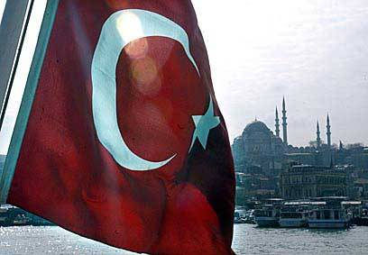

Turchia?
il problema è l'Europa.

Uno
dei temi geopolitici che maggiormente sta suscitando discussioni in
Europa, è
quello di accogliere la Turchia nell'Unione o meno. Ambizione turca
già di
vecchia data, essa fu ripresa lo scorso anno dalla promozione accordata
da
George W. Bush al suo vitale alleato; la stessa Unione ha infine
acconsentito
ad avviare dei negoziati che si prevedono molto lunghi (dieci-quindici
anni
probabilmente), ma che dovrebbero concludersi con l'entrata della
Turchia
nell'UE.
Il
problema di gran lunga più importante che si presenta in
riferimento alla
probabile (sicura) entrata della Turchia nell'Unione Europea: quello
geopolitico. Molti si oppongono o semplicemente dubitano della sua
opportunità.
perché essa potrebbe costituire una sorta di "cavallo di Troia"
nordamericano: la faccenda è complessa e difficilmente
riducibile a schemi
troppo semplicistici. Va innanzitutto notato, a conferma di questo
timore, che
la Turchia è un alleato di lunga data degli USA, avendo
abbracciato la NATO
durante la Guerra Fredda. Il giro di boa è stato rappresentato
dall'ascesa del
partito musulmano moderato di Erdogan, i cui militanti mostrano una
chiara ad
acuta insofferenza verso la protezione americana, che ha finora
utilizzato la
Turchia in funzione anti-europea e anti-russa, lusingandone le vecchie
ambizioni pan-turaniche che l'hanno portata a destabilizzare i Balcani
e l'Asia
Centrale. Oggi la situazione è però diversa: i Balcani
appaiono molto più
tranquilli, e largamente in mano agli Europei - mentre gli USA si sono
ridotti
a fomentare il terrorismo albanese -, mentre la Russia sta rapidamente
riconquistando le posizioni perse nei paesi turcomanni asiatici,
sfruttando lo
stallo nordamericano in Iraq. Inoltre la classe dirigente turca sta
ripensando
radicalmente la sua condotta geopolitica, poiché ha finalmente
realizzato che
il suo ruolo nel Nuovo Ordine Mondiale americanocentrico non andrebbe
al di là
del gendarme custode del "Grande Medio Oriente" - e in ciò si
è
trovata in piena sintonia con l'opinione pubblica, che non vuol perdere
la sua
tradizione nel grande pentolone del melting pot globale. E' per
questo
che, dopo una rivalità sorta in tempi immemorabili, i rapporti
tra Ankara e
Mosca si vanno rapidamente sviluppando verso una riconciliazione
storica. Di
più, Erdogan ha speso tutte le energie possibili per accelerare
l'entrata
nell'UE. Infine, segnali di tensione neppure dissimulati sono apparsi
con USA e
Israele. E' noto come Ankara abbia duramente stigmatizzato la politica
di
repressione attuata dagli Ebrei nei territori occupati, arrivando
addirittura a
ritirare momentaneamente l'ambasciatore da Tel Aviv e ad annullare le
consuete
esercitazioni militari congiunte. Inoltre, il "cavallo di Troia
americano", a differenza di Londra, Madrid, Roma, Varsavia, Amsterdam,
Kiev, ecc., si è rifiutato di partecipare all'invasione
dell'Iraq:
un'operazione, tra l'altro, che la danneggia non poco, giacché
sta portando
alla formazione a ridosso dei suoi confini, d'un forte e ostile stato
curdo
nutrito d'irredentismo anti-iracheno, anti-turco, anti-siriano e
anti-iraniano.
Inoltre il piano del "Grande Medio Oriente", il quale verte proprio
sull'asse Israele-Turchia, è molto pericoloso per il paese
anatolico, poiché ne
accentua il marcato isolamento internazionale dai suoi vicini Arabi,
Europei e
Russi. Il declino dell'egemonia americana, anche se a lungo termine, si
profila
sempre più nitido all'orizzonte; ma quando questo
arriverà, non saranno certo
gli USA - ben protetti da due oceani - a subire la vendetta di tutte le
loro
vittime, bensì i loro alleati in loco. Il risultato è che
Ankara si sta ora
guardando in giro, alla ricerca d'un serio progetto alternativo alla
globalizzazione unipolare promossa dagli USA, che possa garantirgli un
eguale
ruolo di potenza regionale, senza però costringerla a snaturarsi
sul piano
socio-culturale o a scontrarsi con tutti i paesi vicini. La Russia
può offrire
un progetto eurasiatico, che è però ancora in fase di
costituzione e dunque
molto fragile; in compenso Mosca, da quando è finito il regime
comunista, non
si permette più di ficcare il naso negli affari interni dei suoi
alleati, e
questo l'ha già resa più appetibile degli USA per governi
come quelli dell'Asia
Centrale. L'Europa ha un progetto già in atto, cioè
l'Unione Europea, ma non
ben definito; però pacifico e, seppure anche l'UE imiti gli USA
nel cacciare il
becco negli affari altrui, non pretende - perché non può
- d'essere presa sul
serio e ascoltata: paradossalmente, questa sua debolezza la rende
più
desiderabile della federazione nordamericana. In questo momento la
linea di
condotta della Turchia sembrerebbe essere questa: aprire alla Russia
come
interlocutrice, alleggerire il peso dell'alleanza con Washington e Tel
Aviv,
integrarsi nell'Unione Europea. E per noi resta da vedere - ed è
questa la
domanda fondamentale di tutta la faccenda - quale ruolo la Turchia
vorrà
ricoprirvi: fare asse con Londra e affossare definitivamente l'UE sotto
il
tallone statunitense, oppure schierarsi con Parigi, Berlino e Madrid
per fare
dell'Unione un vero soggetto geopolitico autonomo? In breve, è
l'alternativa
già individuata da Tiberio Graziani (vedi "Turchia, dall'Impero
all'Eurasia", nel già citato numero della rivista "Eurasia").
Insomma,
la partita si gioca tra gli assi Londra-Washington e Parigi-Berlino,
per
accogliere la neofita Turchia nelle proprie file. Gli atlantici partono
in
vantaggio, eppure l'asse europeo può confidare nell'evoluzione
impressa dal
governo Erdogan. La debole Unione Europea di oggi, con l'aggiunta di
una Turchia
forte e sensibile ai reali interessi comuni col nostro Continente, si
tramuterebbe immediatamente in una potenza (in questi termini si
è espresso
anche Alexandre del Valle, "ideologo" degli identitaires
francesi, ricordando loro che, ammettendo la Turchia, si "corre il
rischio" di cancellare la "coerenza geopolitica dell'UE", cioè
la sua sudditanza agli USA): la Turchia ha una posizione dotata d'un
valore
strategico che pochi altri paesi hanno: collega l'Europa al Vicino e
all'Estremo
Oriente, controlla due dei corsi d'acqua più importanti del
mondo (Tigri ed
Eufrate, che hanno le sorgenti sull'Altopiano anatolico) e inoltre
ospita
un'importante via di rifornimento energetico per l'Europa. Quest'ultimo
fatto
dovrebbe far riflettere coloro che mirano a difendere quel poco
d'autonomia di
cui oggi gode l'Europa, e anzi incrementarla: i principali oleodotti e
gasdotti
che alimentano il territorio dell'Unione entrano uno dagli stati
baltici, uno
dall'Ucraina e uno dalla Turchia. Ora, com'è noto, Estonia,
Lettonia e Lituania
sono tra i membri più zelanti della "Nuova Europa"
collaborazionista;
come avranno visto tutti, l'Ucraina sta scivolando nella sfera
d'influenza
nordamericana; infine, come abbiamo ripetuto fin qui, la Turchia
è alleata
degli USA. Qual è il risultato? Che gli Anglo-sassoni
controllano più o meno
fortemente tutte e tre queste importanti linee d'approvvigionamento
energetico
per l'Europa. Nel corso della storia millenaria se ne sono viste di
tutti i
colori, ma mai uno stratega degno di questo nome è stato tanto
inetto da
rinunciare a occupare o difendere le vie vitali per i suoi
rifornimenti: pena
l'essere assediati e presi per fame. Ad esempio, l'antica Atene poteva
permettere che i Lacedemoni devastassero ogni anno i campi dell'Attica,
poiché
essa controllava la Tracia, dove trovava il legname, e l'Ellesponto, da
dove
arrivava il grano; ma quando gli Spartani riuscirono a bloccare lo
Stretto, la
"patria della democrazia" (e dell'imperialismo) non esitò a
consegnare la città in mano agli oligarchici e a chiedere la
pace tante volte
rifiutata. O per restare a tempi più recenti, l'Intesa vinse la
Prima Guerra
Mondiale soprattutto perché la flotta britannica bloccava ogni
rifornimento
alla Germania. Se un giorno l'Europa alzasse la testa, allo stato
attuale
Washington non dovrebbe far altro che qualche telefonata per riportarla
all'era
pre-industriale. Ma se, ad esempio, la Turchia fosse membro
dell'Unione, essa
sarebbe divisa tra due fedeltà, e nessuno può dire quale
delle due avrebbe la
meglio. Ma almeno nel secondo caso si avrebbe una possibilità.
Inoltre,
la Turchia porterebbe l'Unione a confinare direttamente con una zona
vitale
quale quella del Vicino Oriente e, inevitabilmente, potrebbe finalmente
dire la
sua. Chi dice che l'UE non potrebbe difendere quei confini "caldi",
si macchia del grave reato d'imbecillità: la Turchia ha un
moderno esercito di
800.000 uomini in servizio attivo, e quello basta e avanza per
difendere i suoi
confini da qualsivoglia nemico della regione. Ma ciò che
più importa, è che
l'Europa entrerà con più forza nell'irrisolto conflitto
israelo-palestinese e,
nessuno potrà negare, persino Bruxelles sarebbe un mediatore
più imparziale
della Casa Bianca. Non a caso molti sionisti sono preoccupati dalla
prospettiva
di ritrovarsi il loro "amico" nell'UE. Il commercio con la Turchia
è
vitale per Israele, a dispetto d'ogni aiuto americano; l'analista ebreo
Vuk
Zlatan mette in guardia i suoi compatrioti, perché con la
Turchia l'Unione
Europea acquisirebbe un eccezionale potenziale contrattuale da usare
verso Tel
Aviv, se non per fare giustizia in Palestina, almeno per normalizzare
la
situazione.
Molti movimenti e individui sinceramente europeisti si stanno mobilitando contro l'entrata della Turchia nell'UE. La mia modestissima opinione, per tutto quanto finora detto, è che essi potrebbe essere cento volte più utili alla causa dell'Europa proprio appoggiando l'entrata della Turchia. Se i governi di Parigi e Berlino tratteranno con Ankara dalla forte posizione contrattuale in cui si trovano, anche le organizzazione politiche e sociali possono fare molto collegandosi ai loro pari turchi, e coordinando un'azione politica di base volta a fare della Turchia non un cavallo di Troia, ma un tassello fondamentale della Grande Europa, libera e indipendente.